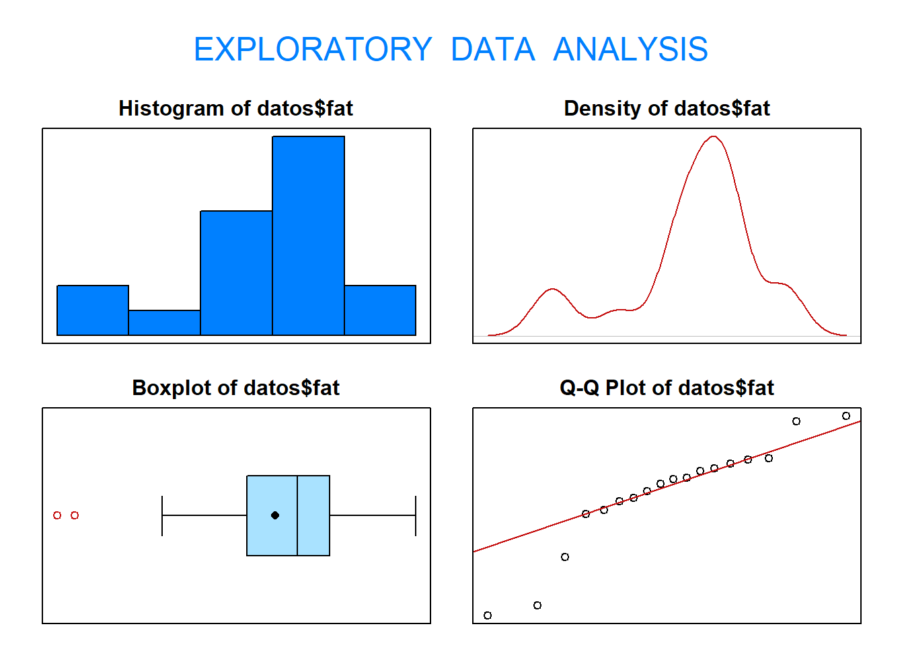

library(PASWR2)
data("EPIDURAL")Práctica 1: Lectura y manejo de ficheros
1. Trabajar con ficheros
1.1. Visualización de ficheros
Carga la librería PASWR2 para trabajar con el fichero EPIDURAL.
- Visualiza los primeros 6 registros del fichero
EPIDURALcon el comandohead().
head(EPIDURAL) doctor kg cm ease treatment oc complications
1 Dr. B 116 172 Difficult Traditional Sitting 0 None
2 Dr. C 86 176 Easy Hamstring Stretch 0 None
3 Dr. B 72 157 Difficult Traditional Sitting 0 None
4 Dr. B 63 169 Easy Hamstring Stretch 2 None
5 Dr. B 114 163 Impossible Traditional Sitting 0 None
6 Dr. B 121 163 Difficult Hamstring Stretch 3 None- Visualiza los primeros 20 registros del fichero
EPIDURALcon el comandohead().
head(EPIDURAL, n=20) doctor kg cm ease treatment oc complications
1 Dr. B 116 172 Difficult Traditional Sitting 0 None
2 Dr. C 86 176 Easy Hamstring Stretch 0 None
3 Dr. B 72 157 Difficult Traditional Sitting 0 None
4 Dr. B 63 169 Easy Hamstring Stretch 2 None
5 Dr. B 114 163 Impossible Traditional Sitting 0 None
6 Dr. B 121 163 Difficult Hamstring Stretch 3 None
7 Dr. D 90 170 Difficult Hamstring Stretch 2 Paresthesia
8 Dr. B 87 164 Difficult Traditional Sitting 6 None
9 Dr. D 74 166 Easy Hamstring Stretch 0 None
10 Dr. C 91 175 Easy Hamstring Stretch 1 None
11 Dr. A 67 167 Easy Traditional Sitting 6 None
12 Dr. C 65 155 Easy Traditional Sitting 2 None
13 Dr. C 91 163 Difficult Hamstring Stretch 2 Paresthesia
14 Dr. C 48 152 Easy Hamstring Stretch 0 None
15 Dr. C 85 168 Easy Hamstring Stretch 2 Paresthesia
16 Dr. C 80 173 Easy Hamstring Stretch 0 None
17 Dr. D 114 168 Impossible Hamstring Stretch 1 None
18 Dr. D 75 157 Easy Traditional Sitting 0 Paresthesia
19 Dr. D 59 152 Easy Hamstring Stretch 0 None
20 Dr. A 57 165 Easy Hamstring Stretch 1 None- Calcula cuántos registros y cuantas variables tiene el fichero
EPIDURALcon el comandodim().
dim(EPIDURAL)[1] 85 7- Calcula cuántos registros y cuantas variables tiene el fichero
EPIDURALcon el comandostr().
str(EPIDURAL)'data.frame': 85 obs. of 7 variables:
$ doctor : Factor w/ 4 levels "Dr. A","Dr. B",..: 2 3 2 2 2 2 4 2 4 3 ...
$ kg : int 116 86 72 63 114 121 90 87 74 91 ...
$ cm : int 172 176 157 169 163 163 170 164 166 175 ...
$ ease : Factor w/ 3 levels "Difficult","Easy",..: 1 2 1 2 3 1 1 1 2 2 ...
$ treatment : Factor w/ 2 levels "Hamstring Stretch",..: 2 1 2 1 2 1 1 2 1 1 ...
$ oc : int 0 0 0 2 0 3 2 6 0 1 ...
$ complications: Factor w/ 5 levels "Failure - person got dizzy",..: 3 3 3 3 3 3 4 3 3 3 ...1.2. Selección de filas (individuos) y columnas (variables).
- Selecciona la variable
doctordel ficheroEPIDURALy visualízala en pantalla
#EPIDURAL[,"doctor"]
EPIDURAL$doctor [1] Dr. B Dr. C Dr. B Dr. B Dr. B Dr. B Dr. D Dr. B Dr. D Dr. C Dr. A Dr. C
[13] Dr. C Dr. C Dr. C Dr. C Dr. D Dr. D Dr. D Dr. A Dr. A Dr. C Dr. C Dr. B
[25] Dr. B Dr. D Dr. D Dr. A Dr. B Dr. B Dr. D Dr. C Dr. C Dr. A Dr. A Dr. A
[37] Dr. A Dr. B Dr. D Dr. D Dr. A Dr. D Dr. D Dr. D Dr. A Dr. C Dr. A Dr. A
[49] Dr. C Dr. A Dr. C Dr. C Dr. B Dr. D Dr. D Dr. B Dr. D Dr. A Dr. A Dr. B
[61] Dr. B Dr. B Dr. C Dr. C Dr. D Dr. A Dr. D Dr. C Dr. A Dr. A Dr. A Dr. A
[73] Dr. C Dr. B Dr. C Dr. C Dr. B Dr. B Dr. B Dr. D Dr. D Dr. B Dr. A Dr. A
[85] Dr. A
Levels: Dr. A Dr. B Dr. C Dr. D- Selecciona la variable
kgdel ficheroEPIDURALy visualízala en pantalla
EPIDURAL$kg [1] 116 86 72 63 114 121 90 87 74 91 67 65 91 48 85 80 114 75 59
[20] 57 105 83 71 108 98 74 134 83 86 76 82 59 75 61 106 81 103 113
[39] 60 90 142 83 83 89 67 90 71 66 95 70 94 85 86 131 67 97 93
[58] 90 84 59 112 86 74 92 168 80 79 84 63 85 79 79 77 93 57 96
[77] 79 69 72 104 89 86 103 72 94- Selecciona la variable
cmdel ficheroEPIDURALy visualízala en pantalla
EPIDURAL$cm [1] 172 176 157 169 163 163 170 164 166 175 167 155 163 152 168 173 168 157 152
[20] 165 165 168 152 175 176 155 169 170 175 165 173 168 173 163 165 163 161 166
[39] 165 171 170 160 160 173 160 168 163 160 170 165 185 163 165 175 159 162 160
[58] 163 164 157 170 170 168 163 168 157 163 160 163 165 168 160 157 170 160 180
[77] 160 157 170 169 172 156 170 160 165- Crea una nueva variable llamada
ratiodefinida como el cociente entrekg/cm. Añádela al ficheroEPIDURAL
EPIDURAL$ratio <- EPIDURAL$kg/EPIDURAL$cm
head(EPIDURAL) doctor kg cm ease treatment oc complications ratio
1 Dr. B 116 172 Difficult Traditional Sitting 0 None 0.6744186
2 Dr. C 86 176 Easy Hamstring Stretch 0 None 0.4886364
3 Dr. B 72 157 Difficult Traditional Sitting 0 None 0.4585987
4 Dr. B 63 169 Easy Hamstring Stretch 2 None 0.3727811
5 Dr. B 114 163 Impossible Traditional Sitting 0 None 0.6993865
6 Dr. B 121 163 Difficult Hamstring Stretch 3 None 0.7423313- EJERCICIO Crea una nueva variable llamada
IMC(índice de masa corporal) definida como \(kg/(m^2)\). Añádela al ficheroEPIDURAL
EPIDURAL$IMC <- EPIDURAL$kg/(EPIDURAL$cm/100)^2
head(EPIDURAL) doctor kg cm ease treatment oc complications ratio
1 Dr. B 116 172 Difficult Traditional Sitting 0 None 0.6744186
2 Dr. C 86 176 Easy Hamstring Stretch 0 None 0.4886364
3 Dr. B 72 157 Difficult Traditional Sitting 0 None 0.4585987
4 Dr. B 63 169 Easy Hamstring Stretch 2 None 0.3727811
5 Dr. B 114 163 Impossible Traditional Sitting 0 None 0.6993865
6 Dr. B 121 163 Difficult Hamstring Stretch 3 None 0.7423313
IMC
1 39.21038
2 27.76343
3 29.21011
4 22.05805
5 42.90715
6 45.54180- Selecciona la paciente número 19 del fichero
EPIDURAL. Visualízala por pantalla y averigua cuánto pesa y cuánto mide
- Crea un nuevo fichero llamado
datos1con aquellas pacientes que pesen menos de 85 kg. ¿Cuántos registros tiene el ficherodatos1?
pos <- which(EPIDURAL$kg<85)
datos1 <- EPIDURAL[pos, ]
head(datos1) doctor kg cm ease treatment oc complications ratio
3 Dr. B 72 157 Difficult Traditional Sitting 0 None 0.4585987
4 Dr. B 63 169 Easy Hamstring Stretch 2 None 0.3727811
9 Dr. D 74 166 Easy Hamstring Stretch 0 None 0.4457831
11 Dr. A 67 167 Easy Traditional Sitting 6 None 0.4011976
12 Dr. C 65 155 Easy Traditional Sitting 2 None 0.4193548
14 Dr. C 48 152 Easy Hamstring Stretch 0 None 0.3157895
IMC
3 29.21011
4 22.05805
9 26.85441
11 24.02381
12 27.05515
14 20.77562- Crea un nuevo fichero llamado
datos2con aquellas pacientes que midan más de 170 cm. ¿Cuántos registros tiene el ficherodatos2?
pos <- which(EPIDURAL$cm>170)
datos2 <- EPIDURAL[pos, ]
head(datos2) doctor kg cm ease treatment oc complications ratio
1 Dr. B 116 172 Difficult Traditional Sitting 0 None 0.6744186
2 Dr. C 86 176 Easy Hamstring Stretch 0 None 0.4886364
10 Dr. C 91 175 Easy Hamstring Stretch 1 None 0.5200000
16 Dr. C 80 173 Easy Hamstring Stretch 0 None 0.4624277
24 Dr. B 108 175 Impossible Traditional Sitting 5 None 0.6171429
25 Dr. B 98 176 Easy Traditional Sitting 1 None 0.5568182
IMC
1 39.21038
2 27.76343
10 29.71429
16 26.72993
24 35.26531
25 31.63740- Crea un nuevo fichero llamado
datos3con aquellas pacientes que midan más de 170 cm o menos de 165 cm. ¿Cuántos registros tiene el ficherodatos3?
pos <- which(EPIDURAL$cm>170 | EPIDURAL$cm<165)
datos3 <- EPIDURAL[pos, ]
head(datos3) doctor kg cm ease treatment oc complications ratio
1 Dr. B 116 172 Difficult Traditional Sitting 0 None 0.6744186
2 Dr. C 86 176 Easy Hamstring Stretch 0 None 0.4886364
3 Dr. B 72 157 Difficult Traditional Sitting 0 None 0.4585987
5 Dr. B 114 163 Impossible Traditional Sitting 0 None 0.6993865
6 Dr. B 121 163 Difficult Hamstring Stretch 3 None 0.7423313
8 Dr. B 87 164 Difficult Traditional Sitting 6 None 0.5304878
IMC
1 39.21038
2 27.76343
3 29.21011
5 42.90715
6 45.54180
8 32.34682- Crea un nuevo fichero llamado
datos4con aquellas pacientes que midan más de 165 cm y menos de 170 cm. ¿Cuántos registros tiene el ficherodatos4?
pos <- which(EPIDURAL$cm>165 & EPIDURAL$cm<170)
datos4 <- EPIDURAL[pos, ]
head(datos4) doctor kg cm ease treatment oc complications ratio
4 Dr. B 63 169 Easy Hamstring Stretch 2 None 0.3727811
9 Dr. D 74 166 Easy Hamstring Stretch 0 None 0.4457831
11 Dr. A 67 167 Easy Traditional Sitting 6 None 0.4011976
15 Dr. C 85 168 Easy Hamstring Stretch 2 Paresthesia 0.5059524
17 Dr. D 114 168 Impossible Hamstring Stretch 1 None 0.6785714
22 Dr. C 83 168 Easy Traditional Sitting 1 None 0.4940476
IMC
4 22.05805
9 26.85441
11 24.02381
15 30.11621
17 40.39116
22 29.40760- Crea un nuevo fichero llamado
datos5con aquellas pacientes atendidas por el Doctor A. ¿Cuántos registros tiene el ficherodatos5?
pos <- which(EPIDURAL$doctor=="Dr. A")
datos5 <- EPIDURAL[pos, ]
head(datos5) doctor kg cm ease treatment oc complications
11 Dr. A 67 167 Easy Traditional Sitting 6 None
20 Dr. A 57 165 Easy Hamstring Stretch 1 None
21 Dr. A 105 165 Difficult Hamstring Stretch 10 Failure - too many OCs
28 Dr. A 83 170 Easy Traditional Sitting 1 None
34 Dr. A 61 163 Easy Traditional Sitting 1 None
35 Dr. A 106 165 Easy Traditional Sitting 2 None
ratio IMC
11 0.4011976 24.02381
20 0.3454545 20.93664
21 0.6363636 38.56749
28 0.4882353 28.71972
34 0.3742331 22.95909
35 0.6424242 38.934802. Lectura de ficheros externos
2.1. Descarga el fichero Bodyfat.txt desde MiAulario. Léelo en R y almacénalo en un objeto llamado datos. Imprímelo por pantalla
datos <- read.table("BodyFat.txt",header=TRUE)
datos age fat sex
1 23 9.5 M
2 23 27.9 F
3 27 7.8 M
4 27 17.8 M
5 39 31.4 F
6 41 25.9 F
7 45 27.4 M
8 49 25.2 F
9 50 31.1 F
10 53 34.7 F
11 53 42.0 F
12 54 29.1 F
13 56 32.5 F
14 57 30.3 F
15 58 33.0 F
16 58 33.8 F
17 60 41.1 F
18 61 34.5 F2.2. Realiza los siguientes ejercicios
- Con el fichero
datos, visualiza en pantalla la variablefat
datos$fat [1] 9.5 27.9 7.8 17.8 31.4 25.9 27.4 25.2 31.1 34.7 42.0 29.1 32.5 30.3 33.0
[16] 33.8 41.1 34.5- Selecciona las observaciones de las variable
fatcuyo valor sea menor que 25 y guárdalas en un objeto llamadolow.fat
pos <- which(datos$fat<25)
low.fat <- datos[pos,]
low.fat age fat sex
1 23 9.5 M
3 27 7.8 M
4 27 17.8 M- Utiliza el comando
tablepara averiguar cuántos hombres y mujeres hay en el ficherodatos.
table(datos$sex)
F M
14 4 - Haz un summary del fichero
datos
summary(datos) age fat sex
Min. :23.00 Min. : 7.80 Length:18
1st Qu.:39.50 1st Qu.:26.27 Class :character
Median :51.50 Median :30.70 Mode :character
Mean :46.33 Mean :28.61
3rd Qu.:56.75 3rd Qu.:33.60
Max. :61.00 Max. :42.00 - Utiliza la función
eda()del paquetePASWR2para realizar un análisis exploratorio de la variablefat
eda(datos$fat)
Size (n) Missing Minimum 1st Qu Mean Median TrMean 3rd Qu
18.000 0.000 7.800 26.275 28.611 30.700 28.611 33.600
Max Stdev Var SE Mean I.Q.R. Range Kurtosis Skewness
42.000 9.144 83.620 2.155 7.325 34.200 0.141 -0.888
SW p-val
0.043